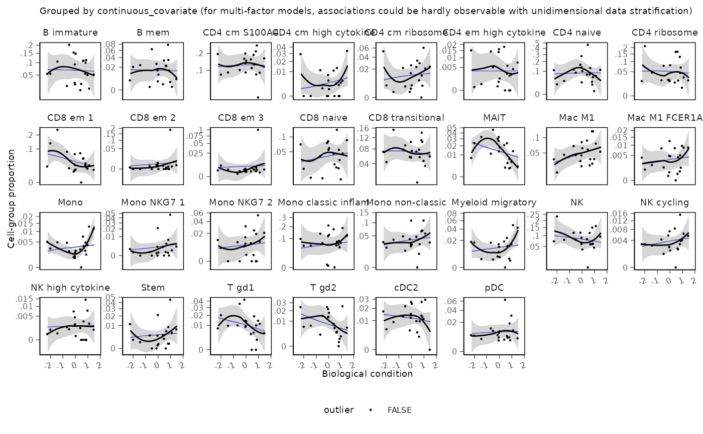

Creates a scatterplot of cell-group proportions against a continuous covariate,
optionally overlaying the posterior predictive trend from the fitted model.
Use this visualisation when the factor of interest is numeric; for discrete
factors prefer sccomp_boxplot().
Usage
sccomp_scatterplot(
.data,
factor,
significance_threshold = 0.05,
remove_unwanted_effects = FALSE
)Arguments
- .data
A tibble containing the results from
sccomp_estimateandsccomp_test, including the columns: cell_group name, sample name, read counts, factor(s), p-values, and significance indicators.- factor
A character string specifying the continuous covariate of interest included in the model.
- significance_threshold
A numeric value indicating the threshold for highlighting significant cell-groups. Defaults to 0.05.
- remove_unwanted_effects
A logical value indicating whether to remove unwanted variation from the data before plotting. Defaults to
FALSE.
Value
A ggplot object representing the scatterplot of cell proportions
against the continuous covariate, faceted by cell group.
References
S. Mangiola, A.J. Roth-Schulze, M. Trussart, E. Zozaya-Valdés, M. Ma, Z. Gao, A.F. Rubin, T.P. Speed, H. Shim, & A.T. Papenfuss, sccomp: Robust differential composition and variability analysis for single-cell data, Proc. Natl. Acad. Sci. U.S.A. 120 (33) e2203828120, https://doi.org/10.1073/pnas.2203828120 (2023).
Examples
print("cmdstanr is needed to run this example.")
#> [1] "cmdstanr is needed to run this example."
# Note: Before running the example, ensure that the 'cmdstanr' package is installed:
# install.packages("cmdstanr", repos = c("https://stan-dev.r-universe.dev/", getOption("repos")))
# \donttest{
if (instantiate::stan_cmdstan_exists()) {
data("seurat_obj")
estimate <- sccomp_estimate(
seurat_obj,
formula_composition = ~ continuous_covariate,
formula_variability = ~ 1,
sample = "sample",
cell_group = "cell_group",
cores = 1
) |>
sccomp_test()
# Plot proportions against the continuous covariate
sccomp_scatterplot(
.data = estimate,
factor = "continuous_covariate",
significance_threshold = 0.05
)
}
#> Loading required namespace: SeuratObject
#> sccomp says: count column is an integer. The sum-constrained beta binomial model will be used
#> sccomp says: estimation
#> sccomp says: model design matrices
#> composition X: 2 parameters: (Intercept), continuous_covariate
#> variability Xa: 1 parameter: (Intercept)
#> random effects: none
#> Loading model from cache...
#> Path [1] :Initial log joint density = -385038.759433
#> Path [1] : Iter log prob ||dx|| ||grad|| alpha alpha0 # evals ELBO Best ELBO Notes
#> 44 -3.823e+05 7.041e-03 1.330e-01 4.449e-01 1.000e+00 2197 -3.250e+03 -3.252e+03
#> Path [1] :Best Iter: [41] ELBO (-3250.114876) evaluations: (2197)
#> Path [2] :Initial log joint density = -383940.428592
#> Path [2] : Iter log prob ||dx|| ||grad|| alpha alpha0 # evals ELBO Best ELBO Notes
#> 35 -3.823e+05 1.044e-02 9.339e-02 7.835e-01 7.835e-01 1647 -3.249e+03 -3.253e+03
#> Path [2] :Best Iter: [34] ELBO (-3248.670938) evaluations: (1647)
#> Path [3] :Initial log joint density = -384376.973006
#> Path [3] : Iter log prob ||dx|| ||grad|| alpha alpha0 # evals ELBO Best ELBO Notes
#> 46 -3.823e+05 1.564e-02 9.030e-02 1.000e+00 1.000e+00 2323 -3.251e+03 -3.263e+03
#> Path [3] :Best Iter: [38] ELBO (-3251.358261) evaluations: (2323)
#> Path [4] :Initial log joint density = -385358.254430
#> Path [4] : Iter log prob ||dx|| ||grad|| alpha alpha0 # evals ELBO Best ELBO Notes
#> 37 -3.823e+05 1.029e-02 1.237e-01 1.000e+00 1.000e+00 1733 -3.252e+03 -3.254e+03
#> Path [4] :Best Iter: [35] ELBO (-3251.654210) evaluations: (1733)
#> Path [5] :Initial log joint density = -384151.690125
#> Path [5] : Iter log prob ||dx|| ||grad|| alpha alpha0 # evals ELBO Best ELBO Notes
#> 48 -3.823e+05 4.598e-03 1.583e-01 2.149e-01 2.149e-01 2451 -3.250e+03 -3.247e+03
#> Path [5] :Best Iter: [48] ELBO (-3247.308685) evaluations: (2451)
#> Path [6] :Initial log joint density = -384264.689342
#> Path [6] : Iter log prob ||dx|| ||grad|| alpha alpha0 # evals ELBO Best ELBO Notes
#> 39 -3.823e+05 1.453e-02 8.985e-02 1.000e+00 1.000e+00 1865 -3.251e+03 -3.252e+03
#> Path [6] :Best Iter: [37] ELBO (-3250.565054) evaluations: (1865)
#> Path [7] :Initial log joint density = -384225.846086
#> Path [7] : Iter log prob ||dx|| ||grad|| alpha alpha0 # evals ELBO Best ELBO Notes
#> 38 -3.823e+05 4.637e-03 9.924e-02 7.281e-01 7.281e-01 1794 -3.250e+03 -3.251e+03
#> Path [7] :Best Iter: [28] ELBO (-3249.504014) evaluations: (1794)
#> Path [8] :Initial log joint density = -384196.804784
#> Path [8] : Iter log prob ||dx|| ||grad|| alpha alpha0 # evals ELBO Best ELBO Notes
#> 45 -3.823e+05 2.094e-02 1.718e-01 1.000e+00 1.000e+00 2230 -3.250e+03 -3.253e+03
#> Path [8] :Best Iter: [42] ELBO (-3250.403964) evaluations: (2230)
#> Path [9] :Initial log joint density = -384578.213840
#> Path [9] : Iter log prob ||dx|| ||grad|| alpha alpha0 # evals ELBO Best ELBO Notes
#> 46 -3.823e+05 1.268e-02 1.411e-01 1.000e+00 1.000e+00 2321 -3.250e+03 -3.251e+03
#> Path [9] :Best Iter: [41] ELBO (-3249.978805) evaluations: (2321)
#> Path [10] :Initial log joint density = -384413.041311
#> Path [10] : Iter log prob ||dx|| ||grad|| alpha alpha0 # evals ELBO Best ELBO Notes
#> 42 -3.823e+05 1.265e-02 1.393e-01 1.000e+00 1.000e+00 2018 -3.251e+03 -3.252e+03
#> Path [10] :Best Iter: [40] ELBO (-3251.197813) evaluations: (2018)
#> Path [11] :Initial log joint density = -384797.152651
#> Path [11] : Iter log prob ||dx|| ||grad|| alpha alpha0 # evals ELBO Best ELBO Notes
#> 42 -3.823e+05 1.088e-02 9.603e-02 1.000e+00 1.000e+00 2075 -3.253e+03 -3.253e+03
#> Path [11] :Best Iter: [32] ELBO (-3252.811848) evaluations: (2075)
#> Path [12] :Initial log joint density = -384285.607254
#> Path [12] : Iter log prob ||dx|| ||grad|| alpha alpha0 # evals ELBO Best ELBO Notes
#> 44 -3.823e+05 5.752e-02 1.040e-01 1.000e+00 1.000e+00 2263 -3.250e+03 -3.251e+03
#> Path [12] :Best Iter: [43] ELBO (-3249.862696) evaluations: (2263)
#> Path [13] :Initial log joint density = -384517.904921
#> Path [13] : Iter log prob ||dx|| ||grad|| alpha alpha0 # evals ELBO Best ELBO Notes
#> 44 -3.823e+05 6.251e-03 2.187e-01 5.433e-01 5.433e-01 2200 -3.251e+03 -3.255e+03
#> Path [13] :Best Iter: [39] ELBO (-3251.077061) evaluations: (2200)
#> Path [14] :Initial log joint density = -384867.663966
#> Path [14] : Iter log prob ||dx|| ||grad|| alpha alpha0 # evals ELBO Best ELBO Notes
#> 42 -3.823e+05 7.522e-03 1.157e-01 1.000e+00 1.000e+00 2055 -3.253e+03 -3.254e+03
#> Path [14] :Best Iter: [29] ELBO (-3253.252990) evaluations: (2055)
#> Path [15] :Initial log joint density = -384102.216705
#> Path [15] : Iter log prob ||dx|| ||grad|| alpha alpha0 # evals ELBO Best ELBO Notes
#> 42 -3.823e+05 1.858e-02 1.809e-01 1.000e+00 1.000e+00 1996 -3.250e+03 -3.250e+03
#> Path [15] :Best Iter: [42] ELBO (-3249.755284) evaluations: (1996)
#> Path [16] :Initial log joint density = -384046.021555
#> Path [16] : Iter log prob ||dx|| ||grad|| alpha alpha0 # evals ELBO Best ELBO Notes
#> 33 -3.823e+05 1.308e-02 7.121e-02 1.000e+00 1.000e+00 1478 -3.250e+03 -3.252e+03
#> Path [16] :Best Iter: [32] ELBO (-3250.361898) evaluations: (1478)
#> Path [17] :Initial log joint density = -384041.956311
#> Path [17] : Iter log prob ||dx|| ||grad|| alpha alpha0 # evals ELBO Best ELBO Notes
#> 37 -3.823e+05 1.194e-02 9.934e-02 1.000e+00 1.000e+00 1732 -3.250e+03 -3.249e+03
#> Path [17] :Best Iter: [37] ELBO (-3249.318941) evaluations: (1732)
#> Path [18] :Initial log joint density = -384031.320357
#> Path [18] : Iter log prob ||dx|| ||grad|| alpha alpha0 # evals ELBO Best ELBO Notes
#> 40 -3.823e+05 1.214e-02 1.366e-01 1.000e+00 1.000e+00 1869 -3.251e+03 -3.253e+03
#> Path [18] :Best Iter: [38] ELBO (-3250.858190) evaluations: (1869)
#> Path [19] :Initial log joint density = -385313.404495
#> Path [19] : Iter log prob ||dx|| ||grad|| alpha alpha0 # evals ELBO Best ELBO Notes
#> 44 -3.823e+05 1.670e-02 1.219e-01 1.000e+00 1.000e+00 2215 -3.249e+03 -3.253e+03
#> Path [19] :Best Iter: [42] ELBO (-3248.755006) evaluations: (2215)
#> Path [20] :Initial log joint density = -384151.199651
#> Path [20] : Iter log prob ||dx|| ||grad|| alpha alpha0 # evals ELBO Best ELBO Notes
#> 41 -3.823e+05 9.693e-03 1.303e-01 1.000e+00 1.000e+00 2013 -3.250e+03 -3.250e+03
#> Path [20] :Best Iter: [34] ELBO (-3249.655646) evaluations: (2013)
#> Path [21] :Initial log joint density = -384265.819660
#> Path [21] : Iter log prob ||dx|| ||grad|| alpha alpha0 # evals ELBO Best ELBO Notes
#> 37 -3.823e+05 2.078e-02 2.303e-01 1.000e+00 1.000e+00 1736 -3.250e+03 -3.253e+03
#> Path [21] :Best Iter: [30] ELBO (-3249.805271) evaluations: (1736)
#> Path [22] :Initial log joint density = -387819.021824
#> Path [22] : Iter log prob ||dx|| ||grad|| alpha alpha0 # evals ELBO Best ELBO Notes
#> 43 -3.823e+05 3.782e-03 1.023e-01 6.656e-01 6.656e-01 2189 -3.251e+03 -3.253e+03
#> Path [22] :Best Iter: [34] ELBO (-3250.852327) evaluations: (2189)
#> Path [23] :Initial log joint density = -384002.711499
#> Path [23] : Iter log prob ||dx|| ||grad|| alpha alpha0 # evals ELBO Best ELBO Notes
#> 41 -3.823e+05 4.570e-03 1.117e-01 6.442e-01 6.442e-01 1969 -3.250e+03 -3.252e+03
#> Path [23] :Best Iter: [33] ELBO (-3249.631527) evaluations: (1969)
#> Path [24] :Initial log joint density = -384160.401432
#> Path [24] : Iter log prob ||dx|| ||grad|| alpha alpha0 # evals ELBO Best ELBO Notes
#> 27 -3.823e+05 1.095e-02 1.211e-01 1.000e+00 1.000e+00 1111 -3.252e+03 -3.253e+03
#> Path [24] :Best Iter: [26] ELBO (-3251.946439) evaluations: (1111)
#> Path [25] :Initial log joint density = -384417.048574
#> Path [25] : Iter log prob ||dx|| ||grad|| alpha alpha0 # evals ELBO Best ELBO Notes
#> 49 -3.823e+05 1.819e-02 1.346e-01 1.000e+00 1.000e+00 2628 -3.248e+03 -3.248e+03
#> Path [25] :Best Iter: [46] ELBO (-3248.174047) evaluations: (2628)
#> Path [26] :Initial log joint density = -384084.359454
#> Path [26] : Iter log prob ||dx|| ||grad|| alpha alpha0 # evals ELBO Best ELBO Notes
#> 40 -3.823e+05 2.046e-02 6.111e-02 1.000e+00 1.000e+00 1955 -3.249e+03 -3.250e+03
#> Path [26] :Best Iter: [39] ELBO (-3248.800726) evaluations: (1955)
#> Path [27] :Initial log joint density = -383985.656726
#> Path [27] : Iter log prob ||dx|| ||grad|| alpha alpha0 # evals ELBO Best ELBO Notes
#> 36 -3.823e+05 1.254e-02 1.513e-01 8.998e-01 8.998e-01 1671 -3.250e+03 -3.253e+03
#> Path [27] :Best Iter: [35] ELBO (-3249.819094) evaluations: (1671)
#> Path [28] :Initial log joint density = -384314.639965
#> Path [28] : Iter log prob ||dx|| ||grad|| alpha alpha0 # evals ELBO Best ELBO Notes
#> 35 -3.823e+05 2.306e-02 1.747e-01 9.754e-01 9.754e-01 1604 -3.251e+03 -3.253e+03
#> Path [28] :Best Iter: [29] ELBO (-3251.097071) evaluations: (1604)
#> Path [29] :Initial log joint density = -383886.716701
#> Path [29] : Iter log prob ||dx|| ||grad|| alpha alpha0 # evals ELBO Best ELBO Notes
#> 34 -3.823e+05 7.276e-03 1.199e-01 9.720e-01 9.720e-01 1556 -3.250e+03 -3.250e+03
#> Path [29] :Best Iter: [34] ELBO (-3250.351249) evaluations: (1556)
#> Path [30] :Initial log joint density = -383937.969902
#> Path [30] : Iter log prob ||dx|| ||grad|| alpha alpha0 # evals ELBO Best ELBO Notes
#> 39 -3.823e+05 6.681e-03 9.700e-02 6.438e-01 6.438e-01 1834 -3.250e+03 -3.252e+03
#> Path [30] :Best Iter: [33] ELBO (-3250.233434) evaluations: (1834)
#> Path [31] :Initial log joint density = -384233.349689
#> Path [31] : Iter log prob ||dx|| ||grad|| alpha alpha0 # evals ELBO Best ELBO Notes
#> 29 -3.823e+05 6.753e-03 1.258e-01 4.638e-01 1.000e+00 1273 -3.254e+03 -3.256e+03
#> Path [31] :Best Iter: [26] ELBO (-3254.034523) evaluations: (1273)
#> Path [32] :Initial log joint density = -384155.229382
#> Path [32] : Iter log prob ||dx|| ||grad|| alpha alpha0 # evals ELBO Best ELBO Notes
#> 35 -3.823e+05 1.082e-02 1.486e-01 1.000e+00 1.000e+00 1584 -3.253e+03 -3.254e+03
#> Path [32] :Best Iter: [29] ELBO (-3252.955566) evaluations: (1584)
#> Path [33] :Initial log joint density = -384409.909722
#> Path [33] : Iter log prob ||dx|| ||grad|| alpha alpha0 # evals ELBO Best ELBO Notes
#> 38 -3.823e+05 1.460e-02 1.370e-01 1.000e+00 1.000e+00 1806 -3.253e+03 -3.251e+03
#> Path [33] :Best Iter: [38] ELBO (-3250.946031) evaluations: (1806)
#> Path [34] :Initial log joint density = -384168.933568
#> Path [34] : Iter log prob ||dx|| ||grad|| alpha alpha0 # evals ELBO Best ELBO Notes
#> 46 -3.823e+05 9.869e-03 1.039e-01 1.000e+00 1.000e+00 2303 -3.249e+03 -3.248e+03
#> Path [34] :Best Iter: [46] ELBO (-3248.441873) evaluations: (2303)
#> Path [35] :Initial log joint density = -384219.523130
#> Path [35] : Iter log prob ||dx|| ||grad|| alpha alpha0 # evals ELBO Best ELBO Notes
#> 32 -3.823e+05 1.857e-02 2.517e-01 1.000e+00 1.000e+00 1414 -3.251e+03 -3.251e+03
#> Path [35] :Best Iter: [32] ELBO (-3251.212221) evaluations: (1414)
#> Path [36] :Initial log joint density = -386972.265054
#> Path [36] : Iter log prob ||dx|| ||grad|| alpha alpha0 # evals ELBO Best ELBO Notes
#> 42 -3.823e+05 1.289e-02 1.086e-01 1.000e+00 1.000e+00 2113 -3.251e+03 -3.253e+03
#> Path [36] :Best Iter: [34] ELBO (-3251.074106) evaluations: (2113)
#> Path [37] :Initial log joint density = -384051.024106
#> Path [37] : Iter log prob ||dx|| ||grad|| alpha alpha0 # evals ELBO Best ELBO Notes
#> 36 -3.823e+05 1.111e-02 8.642e-02 1.000e+00 1.000e+00 1674 -3.249e+03 -3.253e+03
#> Path [37] :Best Iter: [32] ELBO (-3249.086771) evaluations: (1674)
#> Path [38] :Initial log joint density = -384420.687669
#> Path [38] : Iter log prob ||dx|| ||grad|| alpha alpha0 # evals ELBO Best ELBO Notes
#> 46 -3.823e+05 1.288e-02 1.256e-01 1.000e+00 1.000e+00 2332 -3.251e+03 -3.252e+03
#> Path [38] :Best Iter: [39] ELBO (-3250.703873) evaluations: (2332)
#> Path [39] :Initial log joint density = -384497.171108
#> Path [39] : Iter log prob ||dx|| ||grad|| alpha alpha0 # evals ELBO Best ELBO Notes
#> 33 -3.823e+05 6.336e-03 1.301e-01 1.000e+00 1.000e+00 1495 -3.252e+03 -3.253e+03
#> Path [39] :Best Iter: [31] ELBO (-3252.068278) evaluations: (1495)
#> Path [40] :Initial log joint density = -384160.966874
#> Path [40] : Iter log prob ||dx|| ||grad|| alpha alpha0 # evals ELBO Best ELBO Notes
#> 46 -3.823e+05 5.573e-03 1.182e-01 9.084e-01 9.084e-01 2278 -3.250e+03 -3.249e+03
#> Path [40] :Best Iter: [46] ELBO (-3249.159090) evaluations: (2278)
#> Path [41] :Initial log joint density = -384063.509894
#> Path [41] : Iter log prob ||dx|| ||grad|| alpha alpha0 # evals ELBO Best ELBO Notes
#> 41 -3.823e+05 1.047e-02 1.551e-01 8.268e-01 8.268e-01 1986 -3.250e+03 -3.254e+03
#> Path [41] :Best Iter: [35] ELBO (-3250.110323) evaluations: (1986)
#> Path [42] :Initial log joint density = -384781.479849
#> Path [42] : Iter log prob ||dx|| ||grad|| alpha alpha0 # evals ELBO Best ELBO Notes
#> 41 -3.823e+05 5.596e-03 1.663e-01 5.385e-01 5.385e-01 1968 -3.253e+03 -3.255e+03
#> Path [42] :Best Iter: [40] ELBO (-3252.919535) evaluations: (1968)
#> Path [43] :Initial log joint density = -384092.960392
#> Path [43] : Iter log prob ||dx|| ||grad|| alpha alpha0 # evals ELBO Best ELBO Notes
#> 37 -3.823e+05 1.920e-02 8.737e-02 1.000e+00 1.000e+00 1703 -3.251e+03 -3.253e+03
#> Path [43] :Best Iter: [35] ELBO (-3250.897747) evaluations: (1703)
#> Path [44] :Initial log joint density = -383964.879277
#> Path [44] : Iter log prob ||dx|| ||grad|| alpha alpha0 # evals ELBO Best ELBO Notes
#> 35 -3.823e+05 1.462e-02 1.243e-01 1.000e+00 1.000e+00 1576 -3.250e+03 -3.251e+03
#> Path [44] :Best Iter: [29] ELBO (-3250.164539) evaluations: (1576)
#> Path [45] :Initial log joint density = -384160.682484
#> Path [45] : Iter log prob ||dx|| ||grad|| alpha alpha0 # evals ELBO Best ELBO Notes
#> 38 -3.823e+05 1.434e-02 1.233e-01 1.000e+00 1.000e+00 1794 -3.251e+03 -3.251e+03
#> Path [45] :Best Iter: [31] ELBO (-3250.680897) evaluations: (1794)
#> Path [46] :Initial log joint density = -384291.807325
#> Path [46] : Iter log prob ||dx|| ||grad|| alpha alpha0 # evals ELBO Best ELBO Notes
#> 39 -3.823e+05 1.506e-02 1.180e-01 1.000e+00 1.000e+00 1827 -3.249e+03 -3.250e+03
#> Path [46] :Best Iter: [38] ELBO (-3249.405869) evaluations: (1827)
#> Path [47] :Initial log joint density = -384056.310126
#> Path [47] : Iter log prob ||dx|| ||grad|| alpha alpha0 # evals ELBO Best ELBO Notes
#> 30 -3.823e+05 9.345e-03 1.081e-01 1.000e+00 1.000e+00 1276 -3.251e+03 -3.253e+03
#> Path [47] :Best Iter: [29] ELBO (-3251.409584) evaluations: (1276)
#> Path [48] :Initial log joint density = -386642.672117
#> Path [48] : Iter log prob ||dx|| ||grad|| alpha alpha0 # evals ELBO Best ELBO Notes
#> 34 -3.823e+05 2.357e-02 2.097e-01 1.000e+00 1.000e+00 1541 -3.255e+03 -3.252e+03
#> Path [48] :Best Iter: [34] ELBO (-3252.454726) evaluations: (1541)
#> Path [49] :Initial log joint density = -383991.549614
#> Path [49] : Iter log prob ||dx|| ||grad|| alpha alpha0 # evals ELBO Best ELBO Notes
#> 39 -3.823e+05 6.351e-03 8.593e-02 1.000e+00 1.000e+00 1878 -3.250e+03 -3.251e+03
#> Path [49] :Best Iter: [34] ELBO (-3250.341485) evaluations: (1878)
#> Path [50] :Initial log joint density = -383899.739748
#> Path [50] : Iter log prob ||dx|| ||grad|| alpha alpha0 # evals ELBO Best ELBO Notes
#> 45 -3.823e+05 1.411e-02 1.132e-01 9.517e-01 9.517e-01 2242 -3.252e+03 -3.251e+03
#> Path [50] :Best Iter: [45] ELBO (-3251.054018) evaluations: (2242)
#> Finished in 7.7 seconds.
#> sccomp says: to do hypothesis testing run `sccomp_test()`,
#> the `test_composition_above_CLR_fold_change` = 0.1 equates to a change of ~10%, and
#> 0.7 equates to ~100% increase, if the baseline is ~0.1 proportion.
#> Use `sccomp_proportional_fold_change` to convert c_effect (linear) to proportion difference (non-linear).
#> sccomp says: auto-cleanup removed 1 draw files from 'sccomp_draws_files'
#> Joining with `by = join_by(cell_group, M, parameter)`
#> sccomp says: When visualising proportions, especially for complex models, consider setting `remove_unwanted_effects=TRUE`. This will adjust the proportions, preserving only the observed effect.
#> Loading model from cache...
#> Running standalone generated quantities after 1 MCMC chain, with 1 thread(s) per chain...
#>
#> Chain 1 Elapsed Time: 0.892 seconds (Generated Quantities)
#> Chain 1 finished in 0.0 seconds.
#> Joining with `by = join_by(cell_group, sample)`
#> Joining with `by = join_by(cell_group, sample, continuous_covariate)`
#> `geom_smooth()` using method = 'gam' and formula = 'y ~ s(x, bs = "cs")'
#> `geom_smooth()` using method = 'loess' and formula = 'y ~ x'
#> Warning: `position_jitterdodge()` requires non-overlapping x intervals.
#> Warning: `position_jitterdodge()` requires non-overlapping x intervals.
#> Warning: `position_jitterdodge()` requires non-overlapping x intervals.
#> Warning: `position_jitterdodge()` requires non-overlapping x intervals.
#> Warning: `position_jitterdodge()` requires non-overlapping x intervals.
#> Warning: `position_jitterdodge()` requires non-overlapping x intervals.
#> Warning: `position_jitterdodge()` requires non-overlapping x intervals.
#> Warning: `position_jitterdodge()` requires non-overlapping x intervals.
#> Warning: `position_jitterdodge()` requires non-overlapping x intervals.
#> Warning: `position_jitterdodge()` requires non-overlapping x intervals.
#> Warning: `position_jitterdodge()` requires non-overlapping x intervals.
#> Warning: `position_jitterdodge()` requires non-overlapping x intervals.
#> Warning: `position_jitterdodge()` requires non-overlapping x intervals.
#> Warning: `position_jitterdodge()` requires non-overlapping x intervals.
#> Warning: `position_jitterdodge()` requires non-overlapping x intervals.
#> Warning: `position_jitterdodge()` requires non-overlapping x intervals.
#> Warning: `position_jitterdodge()` requires non-overlapping x intervals.
#> Warning: `position_jitterdodge()` requires non-overlapping x intervals.
#> Warning: `position_jitterdodge()` requires non-overlapping x intervals.
#> Warning: `position_jitterdodge()` requires non-overlapping x intervals.
#> Warning: `position_jitterdodge()` requires non-overlapping x intervals.
#> Warning: `position_jitterdodge()` requires non-overlapping x intervals.
#> Warning: `position_jitterdodge()` requires non-overlapping x intervals.
#> Warning: `position_jitterdodge()` requires non-overlapping x intervals.
#> Warning: `position_jitterdodge()` requires non-overlapping x intervals.
#> Warning: `position_jitterdodge()` requires non-overlapping x intervals.
#> Warning: `position_jitterdodge()` requires non-overlapping x intervals.
#> Warning: `position_jitterdodge()` requires non-overlapping x intervals.
#> Warning: `position_jitterdodge()` requires non-overlapping x intervals.
#> Warning: `position_jitterdodge()` requires non-overlapping x intervals.

# }